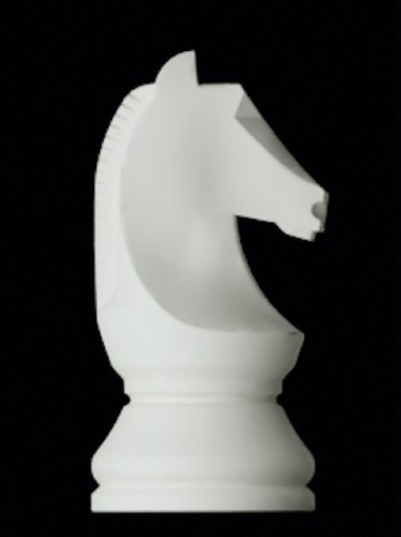
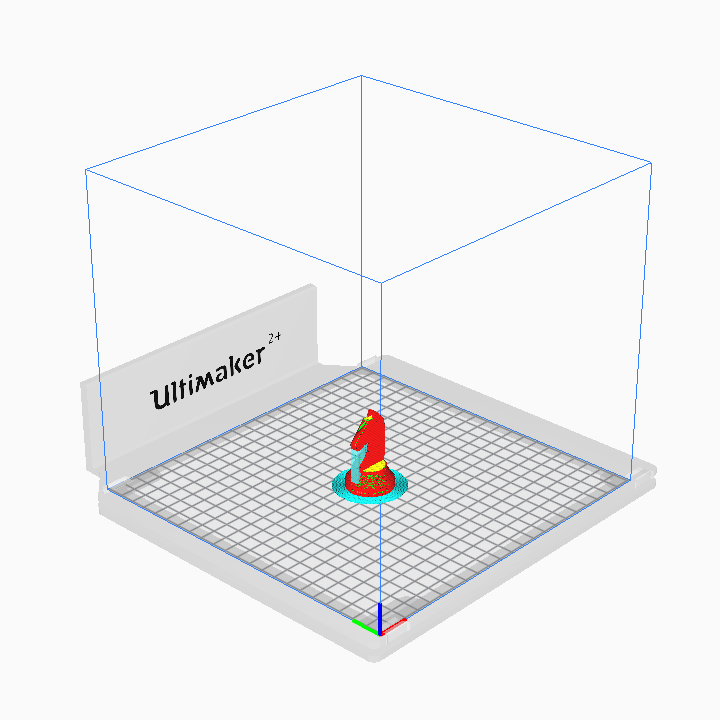
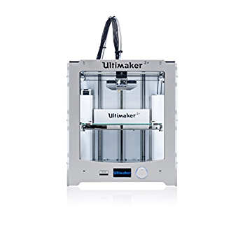
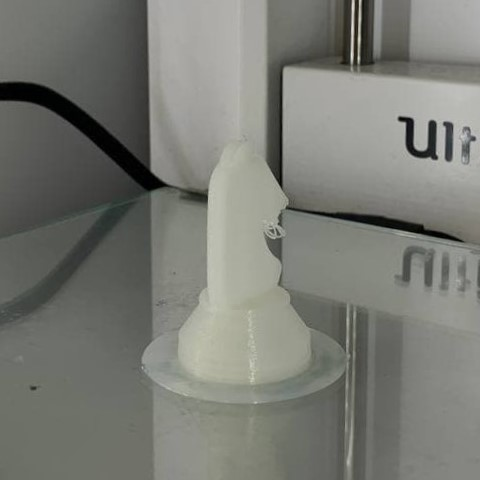
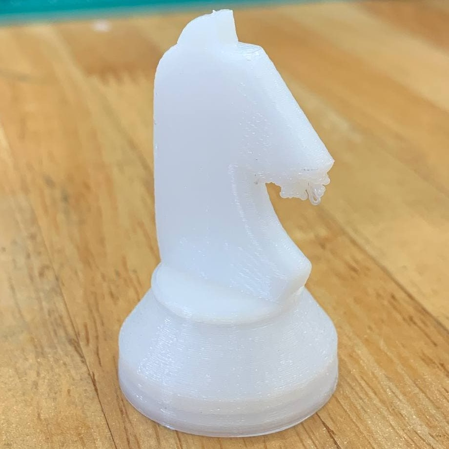
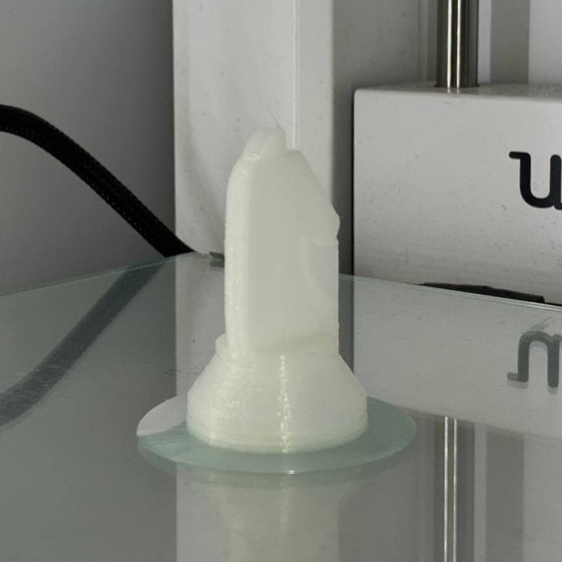
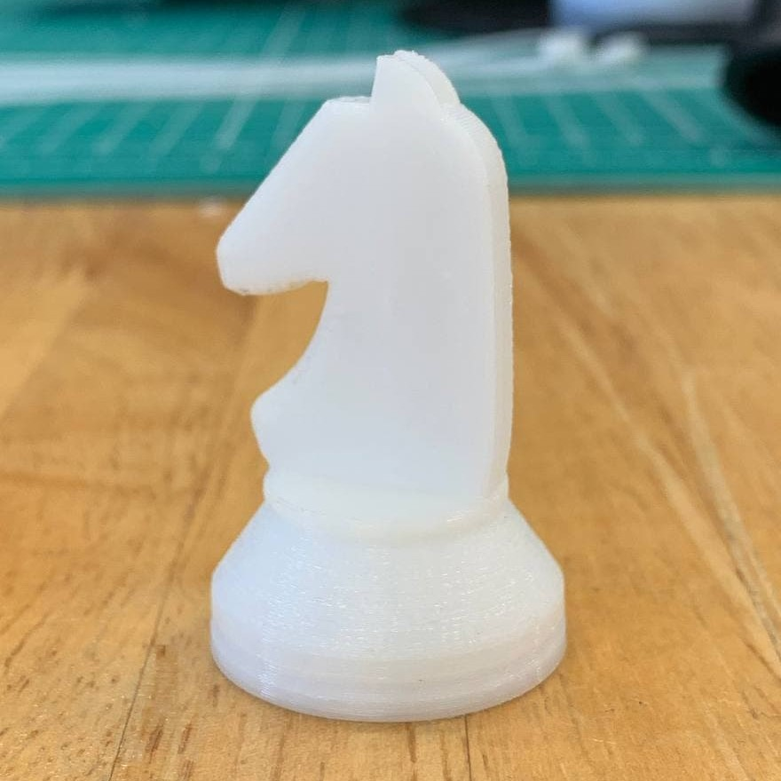

3D Printing or additive manufacturing is a process of making three dimensional solid objects from a digital file. The creation of a 3D object is achieved by using the additive process where an object is created by laying down sucessive layer of material until the object has been fully 3D printed.
I will first design a Knight Chess Piece by using a template I found online.
In order to 3D print, the file needs to be exported in .STL format where I will then open the file in a software called Ultimaker Cura to slice the file.
I will be using the Ultimaker 2+ to print my Knight Chess Piece with the following settings documented below.
Settings
Printer |
Ultimaker 2+ |
Material |
White PLA |
Nozzle |
0.4mm |
Layer Height |
0.2mm |
Wall Thickness |
0.8mm (4x) |
Infill |
10% |
Print Speed |
80m/s |
Temperature |
190℃-205℃ |
Support |
Zig Zag |
Bed Adhesion |
Brim |
For my first initial print I forgot to turn on support which resulted in a bad print.
|  |  |
Learning from my mistake on the first print, I subsequently printed a second chess piece with support on.
|  |  |
This concludes my first 3D Printing project in this elective and I have learned how to turn my 3D models from Autodesk Fusion into 3D Printed models.